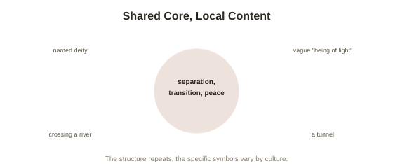

Chapter 4: Cross-Cultural Variation in NDE Content
Chapter 3 mentioned that Greyson-scale standardization made it possible to compare NDE content systematically across cultures, not just within one research population. That comparison turns out to be genuinely informative — showing a pattern of both consistency and variation that neither a purely biological nor a purely cultural explanation handles cleanly on its own.
What stays remarkably consistent across cultures
Cross-cultural NDE research — comparing accounts collected in the United States and Western Europe against accounts from India, Japan, China, various African nations, and other culturally and religiously distinct populations — has found a core structural pattern that holds up strikingly well across this diversity: a sense of leaving the body, moving toward or through some kind of transition (whether described as a tunnel or another spatial metaphor), an encounter with deceased relatives or another significant being, and profound peace, all appear across culturally unrelated populations at meaningfully higher rates than would be expected from pure coincidence or shared media influence alone, particularly in accounts collected before globalized media made cross-cultural exposure to the specific Western "tunnel and light" narrative widely available. This cross-cultural structural consistency is one of the stronger pieces of evidence supporting Chapter 1's premise that something real and shared, not simply a culturally learned script copied from Western popular accounts, underlies the core phenomenon.
Where genuine, meaningful variation shows up
Alongside that core consistency, researchers including psychologist Allan Kellehear, who conducted some of the more systematic cross-cultural comparisons, have documented real differences in specific content that track cultural and religious background closely. The "being of light" is more often specifically identified as a named religious figure (a particular deity, an ancestor, a specific religious authority figure) in cultures with strong, specific religious traditions shaping that expectation, while it's more often described in vaguer, less doctrinally specific terms in more secular Western accounts. The tunnel element itself, treated in popular Western coverage as close to a universal, defining feature, appears considerably less frequently in some non-Western accounts — some cultures report a comparable transitional experience through a different specific sensory metaphor (crossing a river, passing through a gate, entering a specific kind of landscape) rather than a tunnel per se. Reports of a formal "life review" also vary meaningfully in frequency and framing across cultures, sometimes appearing as an explicitly judgment-oriented review tied to specific religious frameworks about moral accounting, and sometimes appearing with little or no evaluative framing at all.

What this pattern actually supports
This specific combination — a consistent underlying structure paired with culturally variable specific content — maps closely onto the same pattern this library's coverage of sleep paralysis found for its own cross-cultural consistency: a shared, presumably biological or neurological core process, generating raw experiential material that then gets interpreted, elaborated, and specifically filled in using whatever cultural and religious framework the person bringing the experience already has available. This pattern is difficult to explain under a purely cultural-learning account (which would predict much less structural consistency across genuinely unconnected traditions, particularly in pre-globalization accounts) and equally difficult to explain under a purely fixed-biological account with no cultural input at all (which would predict much less content variation than researchers actually find). The evidence fits a hybrid model better than either pure alternative — a real, shared underlying process, with real, documented cultural shaping of its specific narrative content.
Why this matters for reading any single account
This gives a genuinely useful interpretive tool for evaluating any specific NDE account, whether encountered directly or in media coverage: the core structural elements (separation, transition, encounter, peace) carry more weight as evidence of a shared underlying phenomenon, while the specific figures, symbols, and framing an individual account uses are exactly the part most likely shaped by that person's particular cultural and religious background, rather than being a universal feature of the experience itself. Reading cross-culturally, rather than assuming any one culture's specific version (most often, in Western media, the American Christian-influenced tunnel-and-light narrative) represents the full, universal phenomenon, gives a more accurate, more complete picture of what's actually being reported worldwide.
Try this
Ideas for noticing or testing this in your own life.
- Next time you encounter an NDE account, separate its structural elements from its specific cultural content — which parts (separation, transition, encounter, peace) match the cross-cultural core, and which parts (a specific figure, a specific symbol) look shaped by the person's own background?
- Consider your own cultural expectations about what an NDE "should" look like — likely shaped by the specific, Western-dominant tunnel-and-light narrative — and notice how that expectation might color how you'd interpret your own experience, should you ever have one.
Worth pulling on?
A few loose threads from this chapter — if any of these genuinely grab you, that's a good sign of where to go next.
- With the phenomenon itself, its possible mechanism, its aftereffects, and its cross-cultural pattern all now covered, it's worth returning to the specific physiological explanations in more depth than Chapter 1's brief summary allowed. → The subject of the final chapter in this topic: the REM intrusion hypothesis and other physiological models, examined closely.
- The same shared-core-plus-cultural-shaping pattern found here shows up in this library's coverage of sleep paralysis specifically. → Already in the library: Out-of-Body Experiences covers that closely parallel cross-cultural pattern directly.